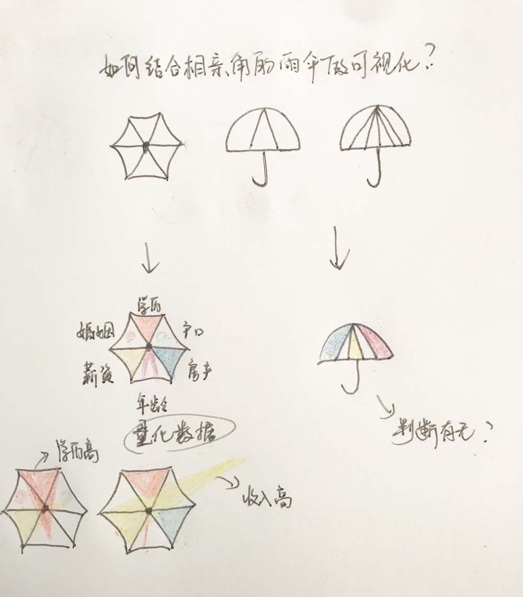
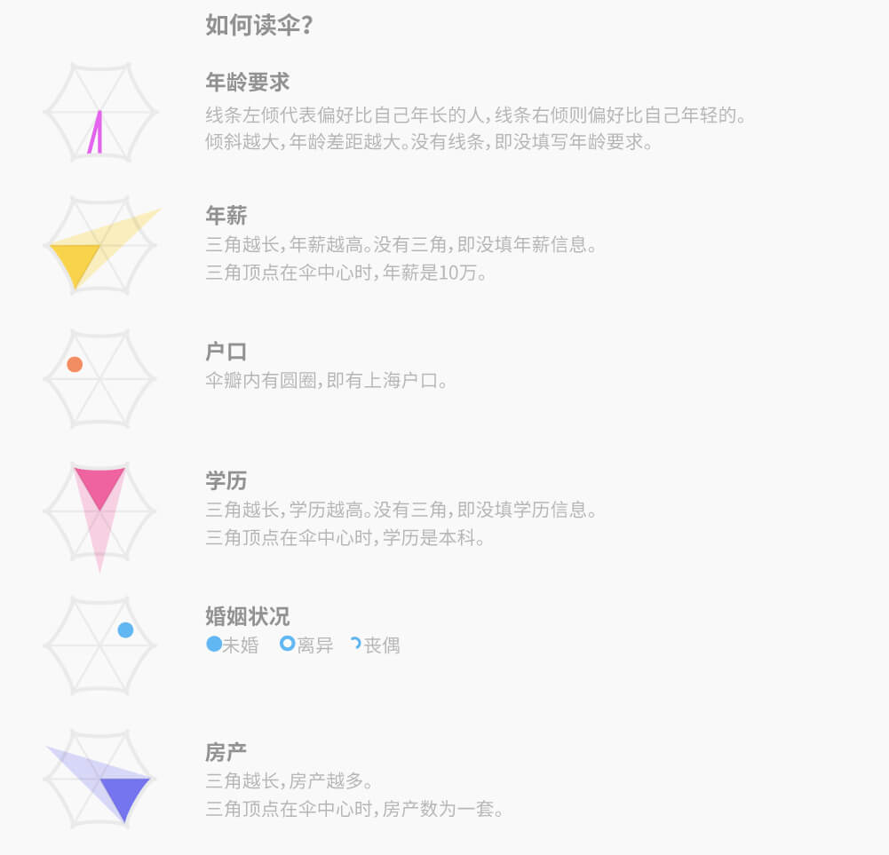
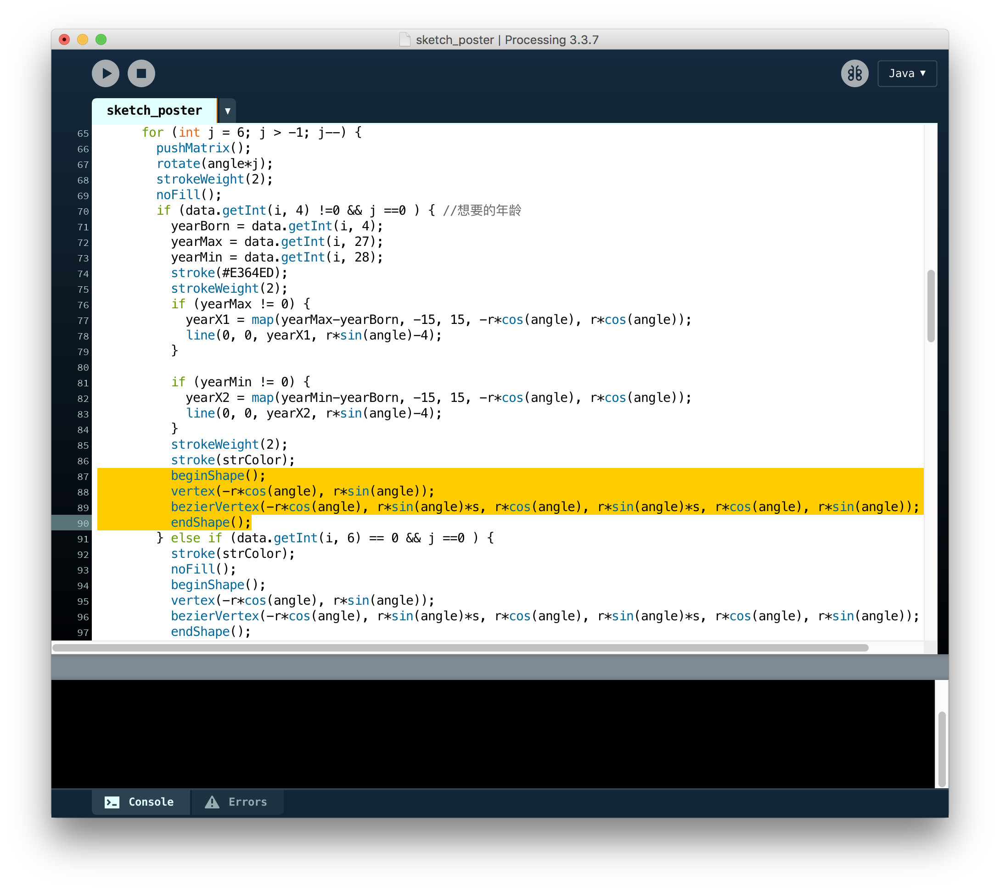
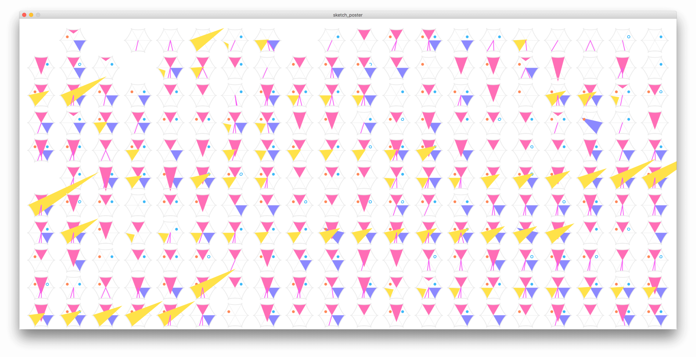
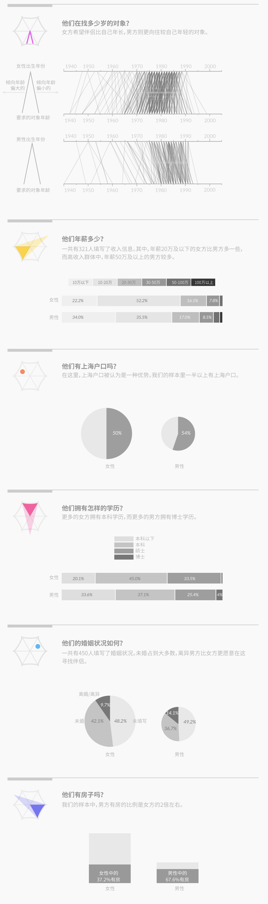

相亲角的数据获取和处理都十分不易，874份相亲广告人工录入数据再整理～辛苦我可爱的同事们了。
在相亲角，除了那一张张相亲广告印象深刻，公园走到两旁摆放相亲广告的雨伞也非常惹眼，所以我们想结合雨伞这个元素去可视化每个人的相亲信息。

我们选取了相亲广告上的六个维度，去量化到雨伞的每个面上。其中三个面是有数据量化，比如房产的数量，年薪的多少，学历的高低；另外两个面是判断情况，比如是否有上海户口，是否离异过或者丧偶；最后一个面是对于对象年龄的期待范围，我们用斜线去框定范围。
我用processing把“伞”的俯视图画出来，还是基础的画图形方式，用贝塞尔曲线把每个伞面画出来。最后导出pdf格式，再Ai中编辑。


除了以伞的方式展示每一个相亲者的基本信息，我们从每个维度上所有男女数据，发现了以下几点：
更多有趣的内容可以查看我们的一篇文章 >> 我们去了相亲角6次，收集了这874份征婚启事